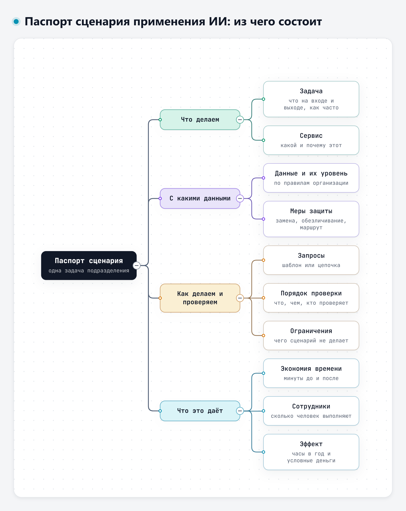
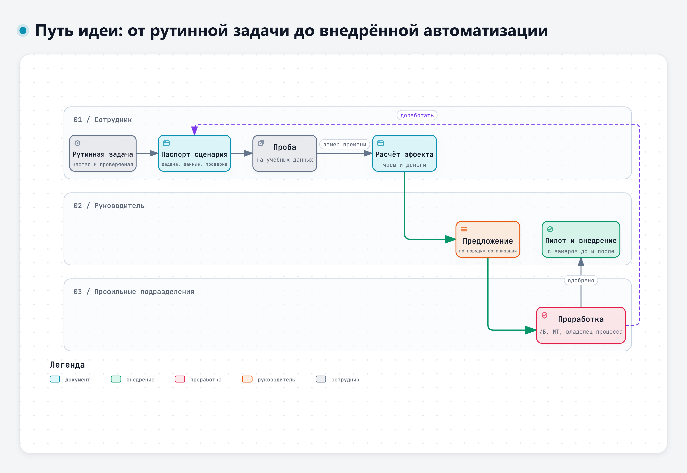

Тема 5.2. Свой рабочий сценарий с ИИ
К концу курса вы подготовите сценарий решения своей рабочей задачи. Сегодня каждый собирает сценарий для одной рутинной работы своего подразделения: что отдаём модели, в каком сервисе, с какими данными, как проверяем и сколько времени это сэкономит. Описание сценария называется паспортом. Паспорт пригодится и после курса: с ним можно прийти к руководителю и в подразделения, которые отбирают задачи для автоматизации.
1. Как перенести приёмы курса в свою работу
За четыре дня у вас накопился набор инструментов. Сценарий собирается из них, нового почти ничего не нужно.
| Что было на курсе | Где | Как используется в сценарии |
|---|---|---|
| Карточка задачи: исходные данные – ожидаемый результат – критерии приёмки – ограничения | Тема 1.1 | Первый раздел паспорта |
| Шаблон запроса из шести частей | Тема 1.2 | Запросы сценария |
| Чек-лист проверки ответа | Тема 1.2 | Порядок проверки |
| Маршруты данных: внешний сервис, после обезличивания и согласования, только внутренний, нельзя | Тема 2.1 | Выбор сервиса и меры защиты |
| Требование ссылаться на пункт документа | Тема 2.2 | Проверяемость ответа |
| Контрольный пример и независимый пересчёт | Тема 4.1 | Проверка расчётов |
| Выборочная проверка выводов по исходной таблице | Тема 4.2 | Проверка анализа данных |
| Выбор инструмента для задачи | Тема 5.1 | Раздел «Сервис» |
Цепочки и шаблоны запросов
Один большой запрос «разберись с замечанием» работает хуже, чем три коротких по шагам: сопоставить с пунктами ТЗ, перечислить причины, оформить черновик. Каждый шаг проще проверить, и ошибку видно там, где она появилась. Шаблоны запросов для повторяющейся работы стоит сохранить в файл: тогда сценарий повторяет и коллега, и вы через месяц.
Какие задачи брать
А. Субботин на отраслевом ИИ-митапе (ноябрь 2026) показывал шесть задач, с которыми справляется даже не самая сильная модель: протокол совещания, ответ на обращение, разбор почты, проверка документа, сводка для руководителя, поиск по документам. Общее у них он сформулировал так: «Везде простая задача, понятный образец и человек на выходе» [39]. Это хороший фильтр и для инженерных задач:
- задача повторяется, лучше несколько раз в неделю;
- у результата есть образец: таблица, форма, шаблон письма;
- результат можно проверить по документу, расчёту или измерению;
- на выходе стоит человек, который принимает результат.
Задачи, где нужное знание есть только в голове у опытного сотрудника, для сценария подходят плохо. Модель такое знание не додумает, а придумает.
Свежий пример: как отбирают задачи для ИИ в «Кофемании»
11 ноября 2026 года на онлайн-конференции форума All-over-IP директор департамента ИТ сети ресторанов «Кофемания» Н. Галкин рассказал, как компания решает, где ИИ нужен, а где нет [55]. Отрасль другая, но вопросы те же, что у инженерной службы: какую задачу брать, что купить, а что сделать самим, кто принимает решение.
Сначала стратегия и данные. Принцип отбора со слайда доклада: «Если инициатива не укладывается строго в пересечение бизнес-целей, готовности ИТ-контура и качества данных, её не будет в разработке» [55]. По словам докладчика, перед первыми проектами с ИИ компания почти год строила хранилище данных и чистила данные. Его формулировка: «Автоматизировать хаос бесполезно» [55].
Матрица из шести критериев. Каждую идею оценивают по шести критериям, до 5 баллов за каждый [55]:
| Критерий | Что оценивают |
|---|---|
| Стандартизация и правила | есть ли регламенты и документы, на которые модель может опираться |
| Рутинность и повторяемость | много ли однотипных операций |
| Потребность в когнитивных функциях | нужно ли понимать контекст, пересказывать, составлять текст |
| Критичность ошибок | чем дороже ошибка, тем ниже балл; балл выше, если можно поставить проверку человеком |
| Интегрируемость | можно ли подключиться к системам, где лежат данные |
| Зрелость данных | актуальны ли данные и базы знаний |
Решение по сумме: 24–30 баллов – внедряют, 15–23 – сначала дорабатывают данные или подключения, меньше 15 – отказываются и используют роботов и скрипты [55]. Заголовок слайда: матрица «учит говорить „нет“».
Сумма баллов не отменяет правил курса. Если результат нельзя проверить, данные нельзя отправлять в выбранный сервис или итог уходит дальше без человека, задача не подходит, сколько бы баллов она ни набрала.
Функция целиком, а не кусками. По опыту компании, эффект даёт либо процесс, заново построенный с учётом ИИ, либо законченная функция, которую выделили из процесса целиком. Частичные замены, по словам Н. Галкина, «не работают»: людям добавляются проверки и лишняя работа [55]. Для паспорта сценария это значит: берите законченную операцию с понятным входом и результатом.
Что получилось. Числа – по слайдам и выступлению докладчика, это данные самой компании:
| Проект | Что делает ИИ | Кто решает |
|---|---|---|
| Сверка справочников двух кадровых систем перед переходом на новую | ищет дубли, сопоставляет названия должностей, выдаёт отчёт о несоответствиях; на слайде – 10 000 часов ручной чистки, которые были заложены в план миграции | человек правит данные |
| Приёмка товара в ресторанах | сравнивает заказ, накладную (в том числе сфотографированную) и данные учётных систем, предупреждает о расхождении или блокирует приёмку; на слайде – точность сопоставления номенклатуры 94 % (в подписи того же слайда – 91 %), приёмка вдвое быстрее, ошибок на 30 % меньше | «Решения в любом случае всегда остаются за человеком» |
| Подсказки официанту | до трёх подсказок с аргументом для гостя | официант |
| Прогноз продаж и автозаказ | прогноз на три дня, разбор по технологическим картам, черновик заказа; на слайде – средняя ошибка прогноза (MAPE) 7,5 % на пятой версии модели | повар просматривает и правит заказ |
Журнал «кто точнее». В автозаказе повар может поправить заказ, а компания ведёт журнал правок и сравнивает, кто точнее, человек или машина [55]. Такой журнал пригодится и в вашем пилоте: видно, где ошибается модель и где правка человека была лишней.
Не гнаться за последними процентами. Прогноз дальше трёх дней делать не стали: каждый лишний день, по оценке докладчика, «фактически удваивает трудозатраты» [55].
Разворот проекта. Подсказки официанту начинались с бота-рекомендателя для самих гостей. Гости предпочли живое общение с официантом, и тот же ИИ стал помощником официанта [55]. В этом проекте помощник сотруднику оказался полезнее сервиса для клиента.
Каждой задаче своя модель. Для сверки должностей, по словам докладчика, использовали «Алису», для прогнозов – модели, развёрнутые у себя, для приложения – модель партнёра, развёрнутая в его локальном контуре [55].
Что говорят исследования об экономии времени
Измерений эффекта от генеративного ИИ на рабочих местах уже много, и картина неоднородная.
В эксперименте с 453 специалистами, которые писали типовые рабочие тексты, доступ к чат-сервису сократил время и улучшил качество [1]:
«Our results show that ChatGPT substantially raised productivity: The average time taken decreased by 40% and output quality rose by 18%.»
Перевод: «Наши результаты показывают, что ChatGPT заметно повысил производительность: среднее время выполнения сократилось на 40 %, а качество результата выросло на 18 %.» – Noy, Zhang, 2023 [1]
В исследовании работы службы поддержки по данным 5172 сотрудников рост производительности оказался скромнее и заметно различался между сотрудниками [2]:
«Access to AI assistance increases worker productivity, as measured by issues resolved per hour, by 15% on average, with substantial heterogeneity across workers.»
Перевод: «Доступ к ИИ-помощнику повышает производительность, измеренную числом решённых обращений в час, в среднем на 15 %, при заметных различиях между сотрудниками.» – Brynjolfsson, Li, Raymond, 2025 [2]
У разработчиков в трёх полевых экспериментах на 4867 человек число выполненных задач выросло примерно на четверть, и сильнее всего – у менее опытных [4]:
«Notably, less experienced developers had higher adoption rates and greater productivity gains.»
Перевод: «Примечательно, что менее опытные разработчики чаще начинали пользоваться инструментом и получали больший прирост производительности.» – Cui и соавт., 2026 [4]
Оценка экономии «на глаз» может оказаться ошибочной. Опытные разработчики решали задачи в хорошо знакомых им проектах, половину задач – с ИИ, половину без [5]:
«Before starting tasks, developers forecast that allowing AI will reduce completion time by 24%. After completing the study, developers estimate that allowing AI reduced completion time by 20%. Surprisingly, we find that allowing AI actually increases completion time by 19%--AI tooling slowed developers down.»
Перевод: «Перед началом разработчики прогнозировали, что ИИ сократит время выполнения на 24 %. После исследования они оценили сокращение в 20 %. Неожиданно оказалось, что с ИИ время выполнения на самом деле выросло на 19 %: инструменты ИИ замедлили разработчиков.» – Becker и соавт., 2025, препринт arXiv [5]
Выборка небольшая, 16 человек, но вывод для паспорта прямой: экономию нужно замерять, а не угадывать. Ощущение «стало быстрее» может не совпадать с секундомером.
Ближе всего к нашей аудитории исследование 2026 года со 128 сотрудниками международной промышленной компании. Они выполняли три вида умственной работы с ИИ и без него [6]:
«Results show that GenAI consistently increases efficiency across tasks. However, its impact on quality is task-contingent: quality increases for knowledge packaging and creation but declines for knowledge acquisition.»
Перевод: «Результаты показывают, что генеративный ИИ стабильно ускоряет работу во всех задачах. Но его влияние на качество зависит от задачи: качество растёт при оформлении и создании материалов и падает при получении новых знаний.» – Bottesch и соавт., 2026, препринт arXiv [6]
Иначе говоря, оформить отчёт или письмо по готовым данным модель помогает хорошо, а там, где нужно разобраться в новом, качество может упасть. Похожий вывод дал эксперимент на задачах консультантов: внутри границы возможностей модели работа ускорялась, за её пределами правильных решений становилось меньше [3]. В полевом эксперименте с 7137 сотрудниками 66 компаний помощник, встроенный в почту и офисные программы, сэкономил тем, кто им пользовался, около двух часов в неделю на почте, но состав работы почти не изменил [7]. А у опытных дизайнеров на этапе исполнения работа с ИИ заняла больше времени без выигрыша в творческом результате, потому что подход модели расходился с их отработанными приёмами [8].
Что из этого берём в паспорт:
- Время «после» включает проверку результата. Без неё экономия всегда выглядит больше, чем есть.
- Время замеряется на нескольких одинаковых операциях до и после, а не оценивается по памяти. Сравнивают одинаковые единицы: полную операцию без ИИ с той же полной операцией с ИИ. Пока полного замера нет, расчёт называют предварительной оценкой.
- Выигрыш зависит от человека: новичку и опытному сотруднику модель помогает по-разному.
- Если задача требует разобраться в новом, проверка нужна особенно тщательная.
Не потерять собственный навык
К. Овчинников на митапе говорил о парадоксе надзора: проверить работу ИИ может только тот, кто умеет делать её сам [43]. Исследователи называют две долгосрочные опасности [29]:
«Deskilling occurs when users lose competence in delegated domains through lack of practice. Overreliance occurs when users accept AI outputs uncritically, amplifying errors rather than correcting them.»
Перевод: «Утрата навыков происходит, когда пользователи перестают практиковаться в работе, которую передали модели, и теряют в ней компетентность. Чрезмерное доверие – когда пользователи некритично принимают результат ИИ и усиливают ошибки вместо того, чтобы их исправлять.» – Noessel, 2026 [29]
Поэтому в хорошем сценарии инженер продолжает делать ту часть работы, которая требует его квалификации: решает, оценивает, проверяет. Модель берёт на себя поиск, сопоставление, черновик.
2. Паспорт сценария
Паспорт сценария – описание одной задачи, которую вы решаете с ИИ. Он нужен, чтобы сценарий можно было повторить, проверить и оценить.

Интерактивная версия схемы – файл 08-Схемы/d5-pasport.html.
Девять разделов паспорта (полный шаблон – документ 5-2 дополнения к кейсу):
- Задача. Вход, выход, кто выполняет, как часто. Сюда переносится карточка задачи.
- Сервис. Какой сервис и почему. Если на учёбе вы пробовали в одном сервисе, а в работе нужен другой, укажите оба.
- Запросы. Полный текст шаблона или цепочки запросов.
- Данные и их уровень. Какие документы и сведения, какой у них маршрут по правилам организации.
- Меры защиты. Что заменяется перед отправкой, что не отправляется никогда, где хранится результат.
- Порядок проверки. Что проверяется, чем, кем и сколько это занимает.
- Ограничения. Где сценарий не работает и чего не делает ни при каких условиях.
- Ожидаемый эффект. Минуты на операцию до и после, число операций, число сотрудников, расчёт в часах и деньгах.
- Что дальше. Личный приём, распространение на службу или предложение на автоматизацию.
Несколько правил заполнения.
Одна задача – один паспорт. «Работа с документацией» – не задача. «Извлечение требований из ТЗ в таблицу для проверки протокола испытаний» – задача.
Проверка – конкретно. «Проверяю результат» не годится. Годится: «сверяю каждое число таблицы с протоколом, пункты – с ТЗ, расчёт тока повторяю в таблице, на это уходит 15 минут».
Ограничения – честно. У каждого сценария они есть. Если вы их не нашли, значит, ещё не пробовали сценарий на трудном примере.
Укажите, кто принимает результат. В паспорте видно, кто принимает результат и что именно он решает. Исследователи, изучавшие, как специалисты сохраняют контроль над текстом, который пишет модель, свели практику к короткому протоколу проверок [32]:
«We derive a nine-step checklist that specifies what practices to apply, and when, to keep AI-assisted text reliable, traceable, and accountable.»
Перевод: «Мы составили чек-лист из девяти шагов, который определяет, какие приёмы и когда применять, чтобы текст, подготовленный с помощью ИИ, был надёжным, его происхождение можно было проследить, а ответственность за него была определена.» – Taş, Memmert, Bittner, 2026 [32]
Если сценарий описывает агента, а не чат, добавьте правило из вебинара П. Гагарина о разработке с агентами: мелкие решения агент принимает сам, но каждое записывает с причиной, а при расхождении плана с реальностью останавливается и спрашивает человека. Его формулировка: «Человека дёргаем по делу, а каждое авто-решение он увидит списком» [45].
Пример: первичный разбор замечаний по испытаниям
Полный пример паспорта – документ 5-3 дополнения к кейсу [47]. Кратко:
- Задача: по замечанию испытаний составить таблицу соответствия пунктам ТЗ, перечень возможных причин и проверок, черновик записи. Около 20 замечаний в месяц на инженера.
- Сервис: на учёбе – разрешённый сервис на учебном кейсе; в работе – внутренний чат, если он есть.
- Запросы: цепочка из трёх запросов по шаблону темы 1.2.
- Данные: протоколы и ТЗ – конструкторская документация и результаты испытаний, по таблице темы 2.1 только внутренний сервис.
- Проверка: числа – по протоколу, пункты – по ТЗ, расчёты – в таблице, причины – по опыту инженера. Около 15 минут.
- Ограничения: решение о соответствии и закрытии замечания не принимается моделью.
- Эффект: 50 минут до, 30 минут после (вместе с проверкой).
3. Что делать со сценарием дальше
Три пути
- Личный приём. Сценарий экономит время вам, и этого достаточно. Паспорт помогает не забыть, как он устроен.
- Распространить на службу. Если задачу делают несколько человек, шаблоны запросов и порядок проверки передаются коллегам. Руководитель видит, сколько времени это даёт службе.
- Предложение на автоматизацию. Если эффект заметный, а сценарий требует подключения к системам, конструктора агентов или внутреннего сервиса, которого пока нет, оформляется предложение по порядку, принятому в организации.

Интерактивная версия схемы – файл 08-Схемы/d5-put-idei.html.
Как считать эффект
Предложение на автоматизацию держится на трёх числах: сколько минут экономится на одной операции, сколько таких операций в месяц и сколько сотрудников их выполняют.
Э_ч = (t_до − t_после) × N × n × M / 60
Э_руб = (Э_ч − З_ч) × С
Здесь t_до и t_после – минуты на одну и ту же полную операцию, причём t_после включает проверку; N – операций в месяц на сотрудника; n – число сотрудников; M – рабочих месяцев в году (в учебном примере 11; в своей задаче период обосновывают); З_ч – часы на подготовку и поддержку сценария; С – стоимость часа работы. Ставку для расчёта в организации даёт экономическая служба, на курсе используем условную.
Пример из документа 5-3: (50 − 30) × 20 × 6 × 11 / 60 = 440 ч в год. Минус 16 ч на подготовку и 22 ч на поддержку – 402 ч. При условной ставке 1200 руб./ч это 482 400 руб. в год.
Типичные ошибки расчёта, которые разберём на практике:
- в «после» забыли время проверки;
- время «до» взято для полной операции, а время «после» – для короткой пробы;
- минуты перевели в часы с ошибкой;
- период M не обоснован или отпуска учтены дважды: в учебном примере M = 11, а если в своей задаче число операций в месяц уже усреднено по году с отпусками, вычитать отпуска ещё раз не нужно;
- не учли время на подготовку сценария и его поддержку;
- освободившееся время выдали за сокращение штата.
Последний пункт стоит обсудить отдельно. Освободившиеся часы – это время, которое уходит на другую работу: на испытания, на разбор сложных случаев, на то, до чего раньше не доходили руки. В. Филатов на вебинаре о качестве программ в эпоху генеративного ИИ советовал вкладывать сэкономленное время в улучшение контроля качества [48]. Для инженерной службы это хороший ориентир.
Когда задачу не стоит отдавать автоматике
Сценарий, где ИИ помогает человеку, и автоматизация, где результат идёт дальше без человека, – разные вещи. Для автоматизации нужны все четыре условия:
- есть точная проверка результата: формула, допуск, сверка со списком;
- ошибка обходится недорого и её можно исправить;
- правильность не зависит от знаний, которые есть только в головах сотрудников;
- результат не уходит наружу от имени сотрудника без его прочтения.
Если хотя бы одного условия нет, это помощник под присмотром человека, а не автоматизация. Письма заказчикам, заключения о соответствии, документы, которые подписывает инженер, – черновик можно, итог без человека нельзя.
Как готовится предложение
Порядок предложения и отбора задач для автоматизации в каждой организации свой. Обычно в предложении есть:
- паспорт сценария;
- результат пробы: на каких материалах пробовали, сколько операций, что получилось;
- замер времени до и после;
- расчёт эффекта;
- что нужно от других подразделений: доступ к системе, внутренний сервис, конструктор агентов, согласование маршрута данных.
Дальше предложение прорабатывают профильные подразделения: защита информации смотрит на данные и маршрут, ИТ – на инструмент и подключения, владелец процесса – на пользу. С. Скидан на митапе советовал запускать новый сценарий поэтапно и заранее записывать, что именно должно улучшиться, и проверять это до и после запуска [42]. Тот же подход годится и для службы: пилот на нескольких сотрудниках, замер, потом решение.
На конференции форума All-over-IP в ноябре 2026 года о том же предупреждали участники дискуссии [58]. М. Васильев (НИУ ВШЭ): бывает, что прототип «за неделю накодили… а потом год коллеги пытаются довести это до промышленной эксплуатации». Р. Ахметзянов (Лемана Тех) назвал частые причины, по которым такие инициативы не дают обещанного: не проведён аудит процесса и данных и не расписано, кто за что отвечает.
Перед подключением любого ИИ-инструмента
Если ваше предложение дойдёт до подключения нового инструмента, в организации обычно согласуют такие вопросы. Список полезно знать и тому, кто предлагает:
- какой инструмент, кто его поставщик, какая версия;
- какая модель и на каких условиях она работает: хранение данных, обучение на них (условия цитируются из документов, а не пересказываются по памяти);
- где обрабатываются данные;
- что именно уходит в инструмент;
- могут ли туда попасть пароли и персональные данные и как это исключается технически;
- где работает агент, если он есть;
- на кого оформлен доступ;
- что записывается в журнал и кто его видит;
- какие права у инструмента: чтение – да, изменение и отправка – только по отдельному решению;
- кто отвечает за инцидент и как откатить изменения;
- срок пилота и условия, при которых его останавливают.
4. Итоговая аттестация
По программе итоговая аттестация – профессиональный зачёт из двух частей: итоговый проект и тестирование на Платформе [46]. Итоговый проект – паспорт вашего сценария, доработанный по обратной связи (порядок шагов – ниже). Тест – тот же, что на входном контроле: 30 вопросов по всему курсу, до 60 баллов. Ещё до 40 баллов – за практику: по 8 за обязательную практическую работу каждого модуля, результаты которой вошли в итоговый проект. Подробности – в файле «Итоговая аттестация» в папке дня.
Порядок завершения курса:
- 25.11 на практике 5.2 группа и преподаватель дают обратную связь по паспорту.
- Паспорт с учётом этой обратной связи сдаётся как контрольная точка модуля 5.
- Преподаватель проверяет контрольную точку и даёт обратную связь по ней.
- Доработанный паспорт (или тот же файл, если замечаний нет) загружается как итоговый проект, тест проходится на Платформе.
Сроки каждого шага – в заданиях на Платформе. В паспорте и приложениях итоговой работы – только учебные или придуманные данные.
Что запомнить
- Сценарий собирается из приёмов курса: карточка задачи, шаблон запроса, маршруты данных, чек-лист проверки.
- Время «после» считается вместе с проверкой и замеряется, а не угадывается.
- Паспорт описывает одну задачу, конкретную проверку и честные ограничения.
- Эффект: (t_до − t_после) × N × n × M / 60, минус затраты, ставка условная.
- Помощник под присмотром человека и автоматизация без человека – разные вещи.
Источники
Нумерация общая для всех материалов дня.
Научные публикации
- [1] Noy S., Zhang W. Experimental evidence on the productivity effects of generative artificial intelligence // Science. 2023. https://doi.org/10.1126/science.adh2586
- [2] Brynjolfsson E., Li D., Raymond L. Generative AI at Work // The Quarterly Journal of Economics. 2025. Vol. 140, № 2. P. 889–942. https://doi.org/10.1093/qje/qjae044
- [3] Dell'Acqua F., McFowland E., et al. Navigating the Jagged Technological Frontier: Field Experimental Evidence of the Effects of Artificial Intelligence on Knowledge Worker Productivity and Quality // Organization Science. 2026. https://doi.org/10.1287/orsc.2025.21838
- [4] Cui K., Demirer M., et al. The Effects of Generative AI on High-Skilled Work: Evidence from Three Field Experiments with Software Developers // Management Science. 2026. https://doi.org/10.1287/mnsc.2025.00535
- [5] Becker J., Rush N., et al. Measuring the Impact of Early-2025 AI on Experienced Open-Source Developer Productivity. 2025. Препринт arXiv. https://doi.org/10.48550/arXiv.2507.09089
- [6] Bottesch S., Schwenke C., et al. Faster, Higher, Stronger? The Impact of GenAI on Knowledge Work Productivity - Evidence from the Field. 2026. Препринт arXiv. https://doi.org/10.48550/arXiv.2607.25922
- [7] Dillon E., Jaffe S., et al. Shifting Work Patterns with Generative AI. 2025. Препринт SSRN. https://doi.org/10.2139/ssrn.5250761
- [8] Hou J., Wang L., et al. The Double-Edged Roles of Generative AI in the Creative Process: Experiments on Design Work // Information Systems Research. 2025. https://doi.org/10.1287/isre.2024.0937
- [29] Noessel C. Deskilling and overreliance: Two long‐term risks of AI assistance, and what designers can do about them // AI Magazine. 2026. https://doi.org/10.1002/aaai.70096
- [32] Taş E., Memmert L., Bittner E. A. C. Episodic oversight in generative AI workflows: A nine-step protocol for preserving human agency (OP-9) // Electronic Markets. 2026. https://doi.org/10.1007/s12525-026-00915-x
Выступления и вебинары
- [39] Субботин А. Платформы для совместной работы с ИИ-агентами. Доклад на ИИ-митапе ЦГУ, 06.11.2026 (презентация доклада).
- [42] Скидан С. Как создать Агента-оператора. Доклад на ИИ-митапе ЦГУ, 06.11.2026 (презентация доклада).
- [43] Овчинников К. Инженер после AI. Доклад на ИИ-митапе ЦГУ, 06.11.2026 (презентация доклада).
- [45] Гагарин П. Разработка с агентами: от постановки задачи до деплоя. Вебинар учебного центра «МАСКОМ», 28.07.2026 (презентация вебинара).
- [48] Филатов В. Искусственный автор, привычный контроль. Вебинар учебного центра «МАСКОМ» и PVS-Studio «Качество и безопасность ПО в эпоху GenAI», 28.08.2026 (выступление на вебинаре).
- [55] Галкин Н. Доклад о встраивании ИИ в бизнес-процессы на примере «Кофемании». Онлайн-конференция «Данные для AI и автоматизации: как собрать управляемый контур данных предприятия», форум All-over-IP & AI 2026, 11.11.2026 (презентация доклада).
- [58] Дискуссия «От данных к бизнес-результату: как выстроить системную работу с данными» (Р. Ахметзянов, Н. Галимова, М. Кулагин, М. Васильев); онлайн-конференция «Данные для AI и автоматизации: как собрать управляемый контур данных предприятия», форум All-over-IP & AI 2026, 11.11.2026.
Учебные материалы
- [46] Дополнительная профессиональная программа повышения квалификации «Искусственный интеллект для инженеров», 56 ак. ч: тематический план и описание программы (раздел «Итоговая аттестация»).
- [47] Учебный кейс ЭС-24 (первый день) и дополнение к нему для пятого дня.
Полный список источников дня – в файле «Источники дня» в папке дня.
Автор курса
Виталий Пиков
- Архитектор информационной безопасности • РБПО • DevSecOps • AppSec
- Лектор и автор образовательных программ по ИБ и РБПО
Телефон: +7 (963) 782-92-78 · E-mail: vitaly@pikov.expert · Сайт: https://pikov.expert · Telegram: @UnderLineSecurity